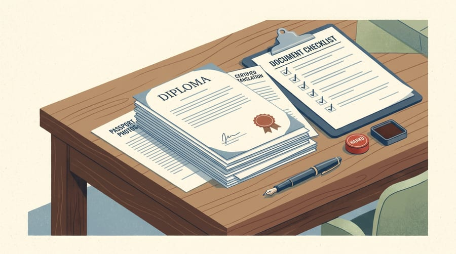
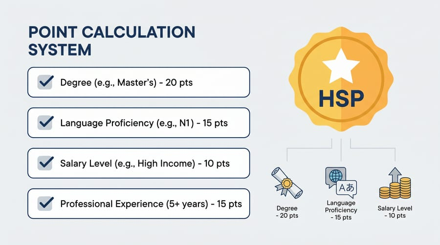

Planning to move to Japan as an IT engineer? The first step -- and often the most confusing one -- is understanding the work visa system. This article explains all the visa types relevant to foreign engineers in the IT field, their requirements, the process from offer letter to landing in Japan, and how to plan your path toward permanent residency.
This guide is written specifically for developers and engineers who want to build a career in Japan's tech industry, based on firsthand experience and the latest regulatory research.
Types of Work Visas for IT Engineers
There are three main visa types you need to know about:
1. 技術・人文知識・国際業務 (Gijinkoku)
This is the most common visa for IT engineers. It covers three job categories in a single package:
- 技術 (Gijutsu) -- technical work such as programming, system engineering, and infrastructure
- 人文知識 (Jinbun Chishiki) -- business analysis, consulting, and work requiring specialized knowledge
- 国際業務 (Kokusai Gyomu) -- work requiring an international perspective
For foreign IT engineers, Gijinkoku is the most relevant. Official information can be found at moj.go.jp/isa.
2. 高度専門職 (HSP / Highly Skilled Professional)
A points-based system requiring a minimum of 70 points to qualify. The main advantage: a much faster path to permanent residency (PR), taking only 1-3 years compared to 10 years via the standard route. More details in the HSP Visa section below.
3. 特定活動 (Tokutei Katsudou)
Designated Activities Visa. There are several relevant variations:
- J-FIND -- for job seekers who graduated from top-ranked global universities
- Startup visa -- for founders establishing a company in Japan
- Other variations depending on applicable government programs
技術 (Gijutsu) Visa Requirements for IT Engineers
To obtain a work visa in the technical category, you must meet one of the following requirements:
- Bachelor's or Master's degree in a relevant field -- Computer Science, Information Technology, Information Systems, or a related discipline
- IT certification recognized by Japan's Ministry of Justice -- including IPA examinations such as 基本情報技術者 (Fundamental Information Technology Engineer Examination)
- 10+ years of practical work experience in the IT field
Other General Requirements
- Have a sponsoring company in Japan willing to guarantee your visa
- The sponsoring company must be in good financial standing
- Visa duration: 5 years, 3 years, 1 year, or 3 months (determined by immigration)
Sponsoring Company Categories (1-4)
Japanese immigration classifies sponsoring companies into 4 categories. This classification determines how fast the visa process is and how many documents are required:
| Category | Description | Process |
|---|---|---|
| Category 1 | Large companies listed on the stock exchange | Fastest, fewest documents required |
| Category 2 | Withholding tax > ¥15 million/year | Relatively fast |
| Category 3 | Small-to-medium, has previously sponsored foreign workers | More documents required |
| Category 4 | Small/new, has never sponsored before | Slowest, most documents required |
If you are applying to a small startup (Category 4), be prepared for a longer process and more paperwork. Large companies (Category 1) typically have experienced HR teams that handle visa applications routinely.
Process from Offer Letter to Departure
Here is the typical timeline after you accept a job offer:
Accept and sign the offer letter. Start preparing documents: diploma, transcripts, IT certifications, passport photos, and passport copy.
The company submits a COE (Certificate of Eligibility) application to the Japanese immigration office. This process takes 1-3 months depending on the company category.
Take the original COE to your nearest Japanese Embassy or Consulate. The process takes 5-7 business days.
Prepare initial funds of ¥300,000-500,000 (~USD 2,000-3,300) for apartment deposit, furnishing, and first month's living expenses.
Register at the Kuyakusho (ward office) within 14 days. Set up your Residence Card, My Number, and National Health Insurance (NHI).

HSP Visa: Fast Track to Permanent Residency
The Highly Skilled Professional visa uses a points-based system. Here are the points relevant to IT engineers:
| Criteria | Points |
|---|---|
| Bachelor's degree | +10 |
| Master's degree | +20 |
| Doctoral degree | +30 |
| Work experience 3-10+ years | +5 to +20 |
| Salary ¥5M-¥8M/year | +15 to +25 |
| JLPT N2 | +10 |
| JLPT N1 | +15 |
| 1 national IT certification | +5 |
| 2+ national IT certifications | +10 |
Strategy to reach 70+ points: a combination of a Master's degree, 5+ years of experience, salary of ¥6M+, and JLPT N2 is often enough to clear the threshold. Adding IPA certifications provides significant bonus points.

Case Study: Switching from a TG Visa to IT
Many foreign workers come to Japan on a Tokutei Ginou (TG / Specified Skilled Worker) visa or a trainee visa, and later want to transition to an IT career. It is possible, but it requires strategy and patience:
Realistic Timeline
- First 3-6 months: Adapt to life in Japan + start building an IT portfolio (GitHub, personal projects)
- 6-12 months: Build concrete proof of coding ability, obtain IPA FE (Fundamental Information Technology Engineer) certification
- 12+ months: Begin actively applying for IT engineer positions
IT Work Visa in Japan FAQ
Q: Can I work in IT without going through a training agency?
Absolutely. Training agencies (LPK) are for internship/trainee programs (技能実習), not for IT professionals. You can apply directly through Wantedly, LinkedIn, Green Japan, or other job boards. Also read our guide on the hiring process in Japan.
Q: Am I too old if I'm over 30?
There is no age limit for work visas in Japan. What matters is your qualifications (degree/certifications/experience) and a sponsoring company. In fact, 10+ years of work experience can actually be an advantage.
Q: Can I bring my family?
Yes. Once your work visa is active, you can sponsor a 家族滞在 (Kazoku Taizai / Dependent Visa) for your spouse and children. A spouse with a Dependent Visa can also work part-time (max 28 hours/week) with an additional permit.
Next Steps
Understanding the visa system is the first step. Next, you will want to learn about IT engineer salaries in Japan, how the hiring process works, and what you need to know about company culture in Japan.
If you have specific questions about IT work visas in Japan, feel free to reach out through our About page or join our community.
This article is based on an ebook by Vetra Aprilia and was last updated in June 2026. Immigration regulations are subject to change -- always verify with the official source at ISA (moj.go.jp/isa).
Comments
0 comments